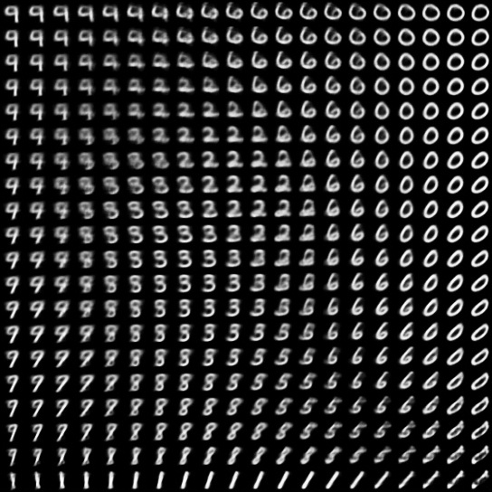
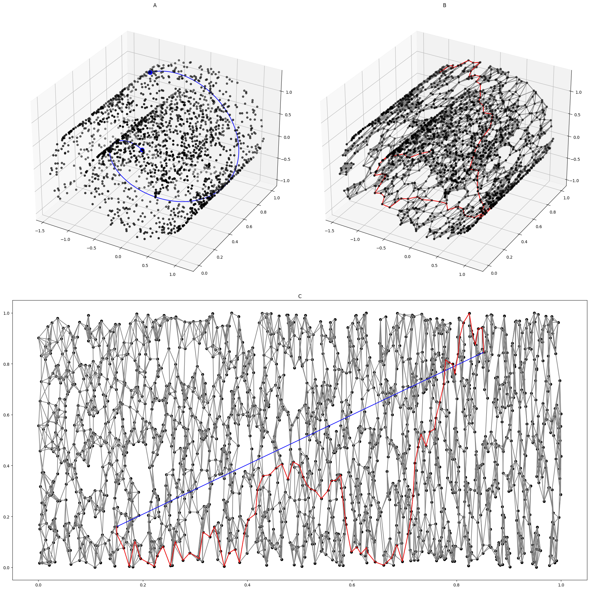
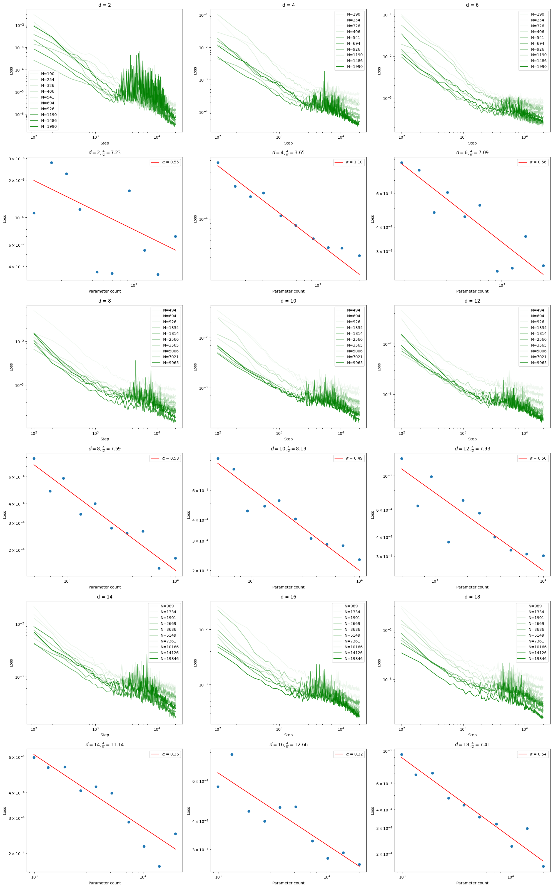
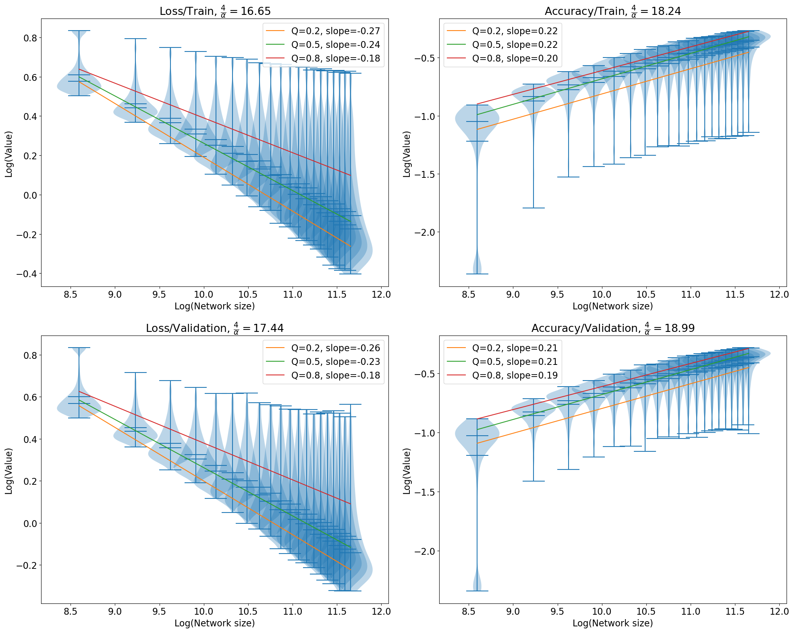

This is a theory of neural scaling law, proposed by (Bahri et al. 2021; Sharma and Kaplan 2022)
According to this theory, a neural network, when trained to convergence, allocates its \(N\) parameters in two parts: * A fixed number of parameters that map the data to an intrinsic data manifold of dim \(d\). * All other parameters that handle pieces of this manifold. Loss \(\propto\) the volume of each manifold piece.
They argued that the loss function should scale as \(L \propto N^{-4/d}\) for cross-entropy and mean-square losses.
The manifold hypothesis
Consider the space of all MNIST images. Each MNIST image is a 28x28 grayscale, so the total space is \(\mathbb R^{28\times 28} = \mathbb R^{784}\).
However, as you may have seen in experiments with the VAE, most of the MNIST dataset “collapses” onto a much smaller subset of \(\mathbb R^{784}\). This is the “(intrinsic) data manifold”, with a dimension much smaller than \(784\). Indeed, the very fact that the intrinsic dimension is small allows us to have meaningful “2D slices” of the dataset:

Real data can be expensive, though, which is why we often use “toy” datasets with known dimensions, generated by a known random process. For example, the following is the “Swiss roll” dataset. It is generated by first populating a 2D square \([0, 1]^2\), then use a function \(f: \mathbb R^2 \to \mathbb R^3\) to “roll up” the square into 3D space.

{kind=link}
Synthetic data manifolds
Consider the simplest data manifold: \(\mathbb R^d\), affinely transformed, then embedded in \(\mathbb R^n\), with \(n > d\).
To synthesize such a data manifold, we randomly initialize a teacher network, so-called because it implements the function that a student network will fit to by supervised training. Each teacher network is constructed thus:
- The number of neurons in each layer are: \([d, 9, 600, 600, 1]\)
- It has 0 bias.
- The weights between layers are sampeled from \(\mathcal N(0, m^{-1/2})\) , where \(m\) is the input size of the layer (a form of He initialization).
- The activation function at the second (with 9 neurons) and last layers are identity. All other activation functions are ReLU.
Once we have constructed a teacher network, we use it to generate a dataset \(\{(x_i, y_i)\}_i\) thus:
- Generate random gaussian vectors \(\{t_i\}_i\) in \(\mathbb R^d\), with mean \(0\) and std \(I_{d\times d}\).
- For each \(t \in \{t_i\}_i\), push \(t\) through the teacher network.
- Let \(x \in \mathbb R^9\) be the teacher network activation at the second layer, with 9 neurons.
- Let \(y \in \mathbb R\) be the teacher network output.
Some proofs
Assuming that we have Lipschitz continuity, we can make some proofs.
Learning data manifold by neural networks
According to the theory, if the data manifold has dimension \(d\), then as we scale up a neural network with \(N\) parameters, the MSE loss of a fully-trained network would scale like \(L \sim N^{-\alpha}\), where \(\alpha \approx 4/d\).
Let’s test this.
First, we define the “student” neural network architecture:
- The number of neurons in each layer are: \([9, n, n, 1]\).
- The biases are initialized to 0.
- The weights between layers are sampeled from \(\mathcal N(0, m^{-1/2})\), where \(m\) is the input size of the layer (a form of He initialization).
- All activation functions are ReLU.
A simple computation shows that the network has exactly \(N = n^2+12n + 1\) parameters1
1 \(N = \underbrace{(n+n+1)}_{\text{first layer}} + \underbrace{(9n + n^2 + n)}_{\text{second layer}}\)

Experiments
I ran it for days on my laptop.

